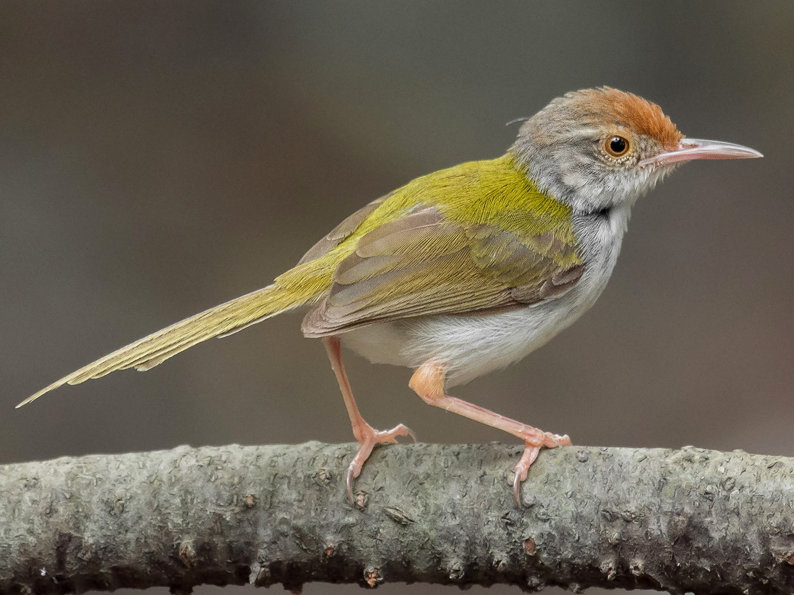

Bison (Rajbari) National Park
Location : Trishna Wildlife Sanctuary, Tripura
Established in :
Area : 31.63 km2
Flora : There are several herbs, shrubs, tree species, climbers etc. To be exact, there are 230 trees, 110
shrubs, 150 climbers and 400 herbs found in the sanctuary. Four types of forests can be found in this Sanctuary, they are
Tropical Semi-Evergreen Forest, East Himalayan lower Bhabar sal, Moist mixed deciduous Forest, and Savannah woodland. Bamboo
is abundantly available in this sanctuary. Species have immense medicinal value, such as Tulsi, Rudraksha, Kalmegh and many more.
Fauna : Bison, gibbons, langurs, wild boars, wild cats, leopards etc. are some of the animal species that can
be spotted at the Park. Pheasant-tailed Jacana, White-breasted Kingfisher, Indian Black drongo, Tailorbird, Jungle Myna,
Hornbill, Doves, and many such species of birds are captivating.
 National Park.png)
Bison (Rajbari) National Park

Indian bison

Tailorbird

Indian black drongo